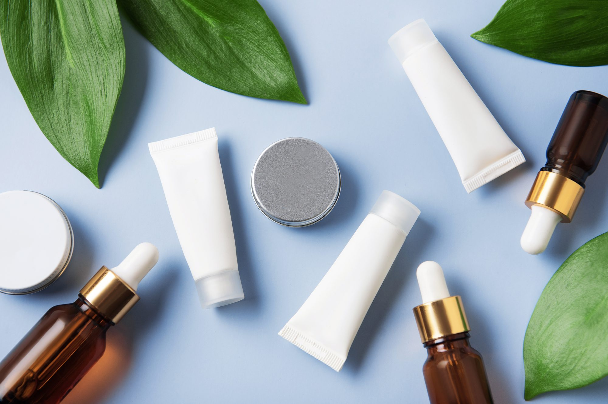

How do you take care of you?
October 1, 2021 by Stephanie Allen

Stephy Naturals is the place you can come to rejuvenate and take care of your health and wellness. Today I will be sharing on the benefits of massage therapy. Massage is an ancient practice that has provided many health benefits throughout the years. These include physical, mental and emotional health benefits. A soothing deep tissue massage not only gets out toxins to beautify the skin but also helps with healing any issues such as pain, sore joints and weakness. Let me know what you think in the comments about massage. When was your last session? Hit me up in the comments!
Good skincare. Why is it important?
October 3, 2021 by Stephanie Allen
What's your skincare routine like? Skincare is so very important today with the changing climate and increased stress in one's daily activities. It is now more than ever that one needs to have a skincare routine in place. Cleansing your skin twice a day will help to keep the skin young and get rid of those anti-aging effects. Skincare tip of the day: Drink at least 8 glasses of water to keep your skin healthy. Additionally, exercising and reducing fatty/sugary items in the diet will greatly help!